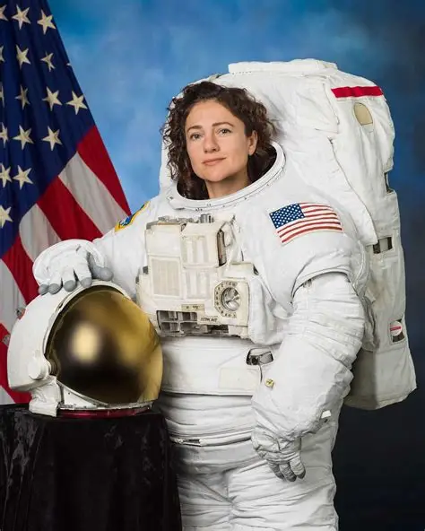
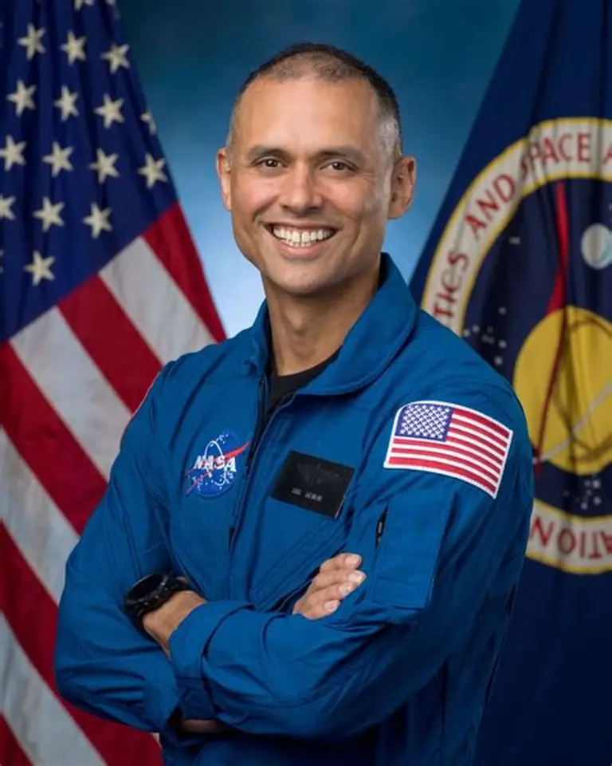
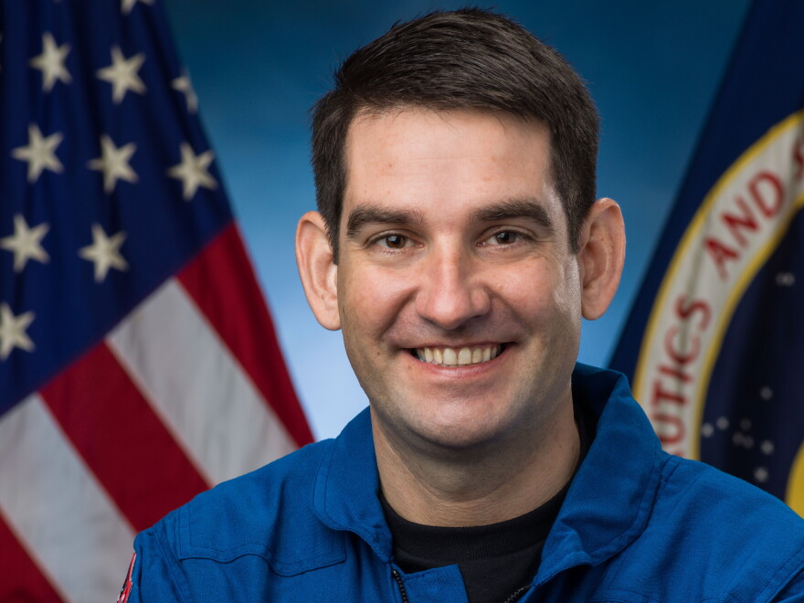
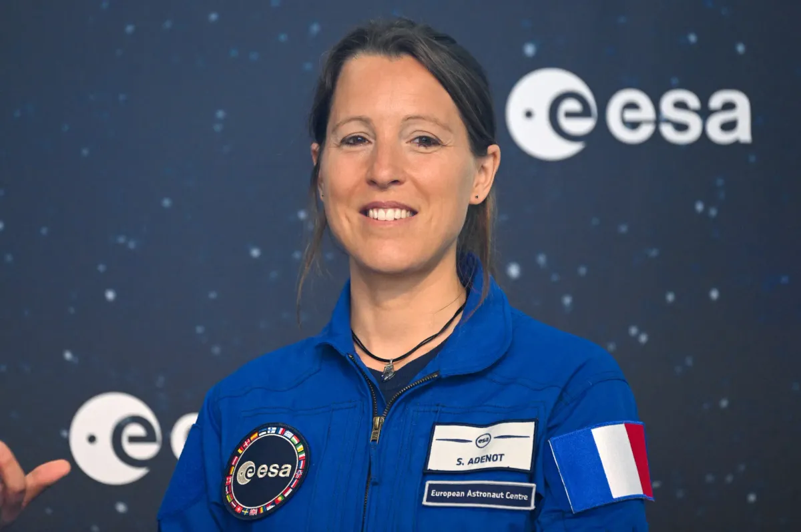
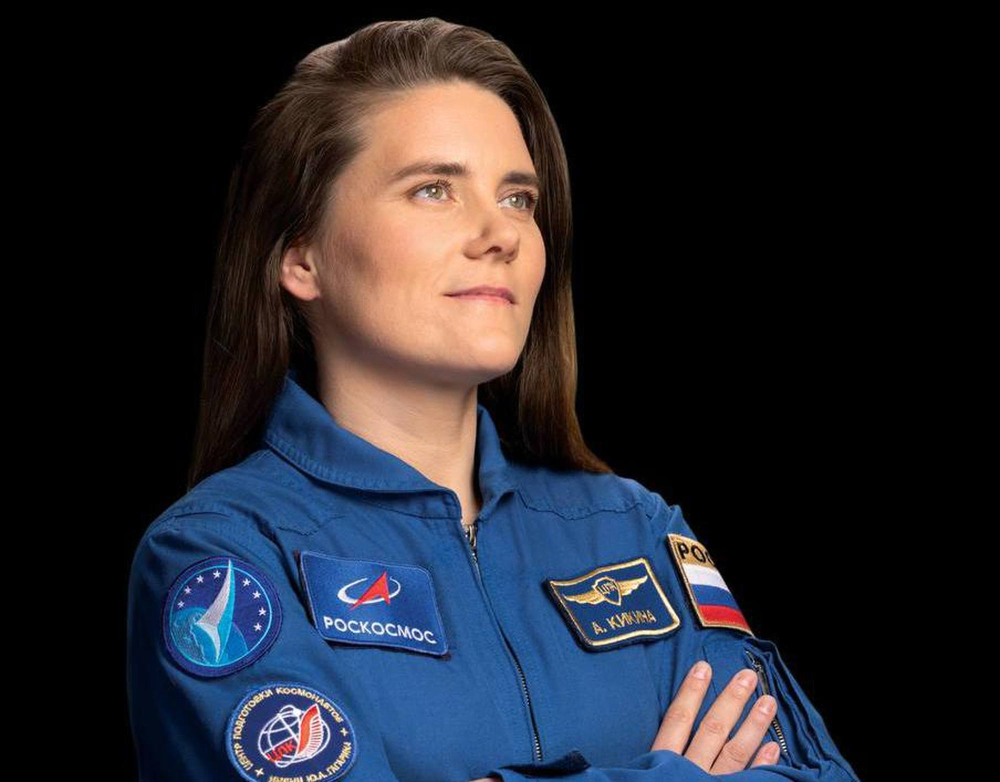
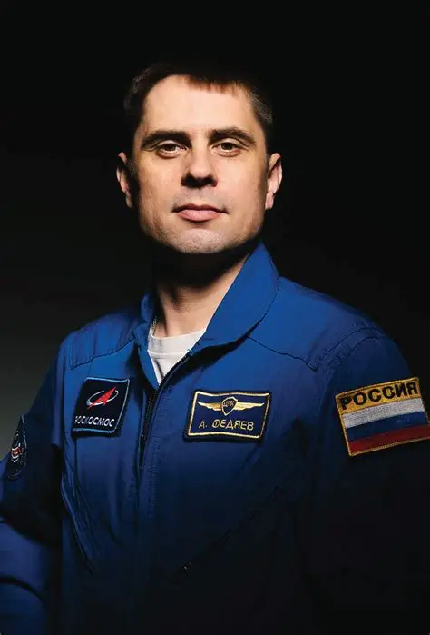
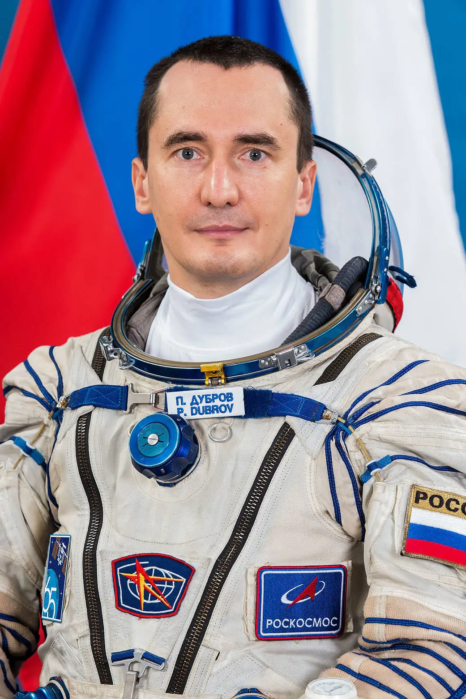

Équipage actuel - expédition 75

Jessica Meir | 
NASA | Commandante

Anil Menon |
NASA | Ingénieur de vol

Jack Hathaway |
NASA | Ingénieur de vol

Sophie Adenot | 
ESA | Ingénieur de vol

Anna Kikina | 
Roscosmos | Ingénieur de vol

Andrey Fedyaev |
Roscosmos | Ingénieur de vol

Pyotr Dubrov |
Roscosmos | Ingénieur de vol